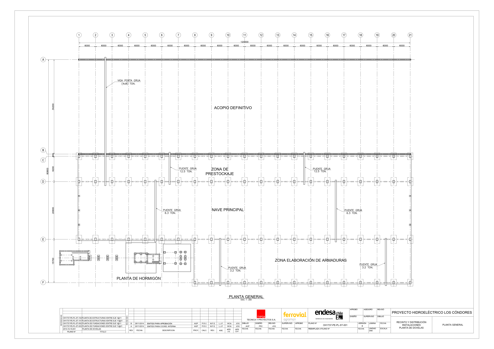
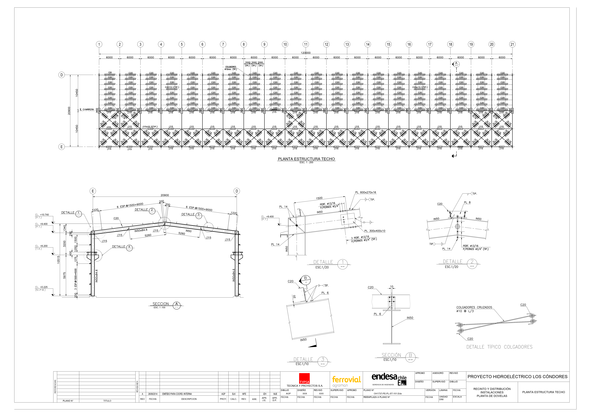
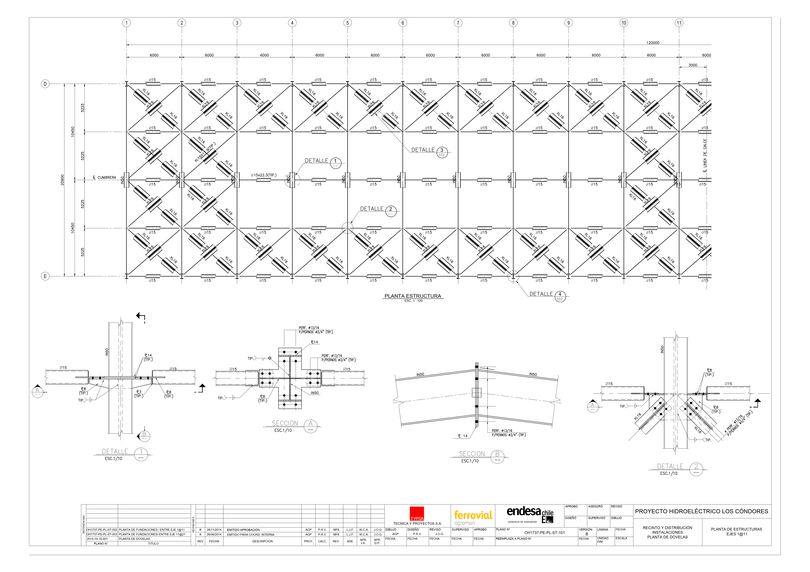

A 360 kilómetros al sur de la capital, Santiago, a una hora de camino de Talca y cerca ya del paso del Pehuenche, frontera andina entre Chile y Argentina, las obras de la central avanzan sin pausa. La mayoría de los trabajos no se ven, ocultos en las entrañas de la cordillera. Cuando estén terminados, el único rastro de que allí está enterrada una de las mayores centrales hidroeléctricas del país será una puerta de entrada.
Bajo la tierra se construyen los 12 kilómetros del túnel de aducción, el agujero que llevará el agua de la laguna del Maule hasta las turbinas. También allí, en una gruta artificial de 40 metros de altura, está ubicada la caverna de máquinas, y se salvan los 470 metros de desnivel del túnel de presión blindado.
El objetivo es pedirle prestado su poder al agua sin alterar su entorno. Equilibrar la demanda eléctrica con las necesidades de riego del valle del Maule sin que la paz de los Andes se vea interrumpida. Iluminar Chile sin molestar al cóndor, que ya estaba allí antes de que los hombres decidiesen agujerear la tierra.


